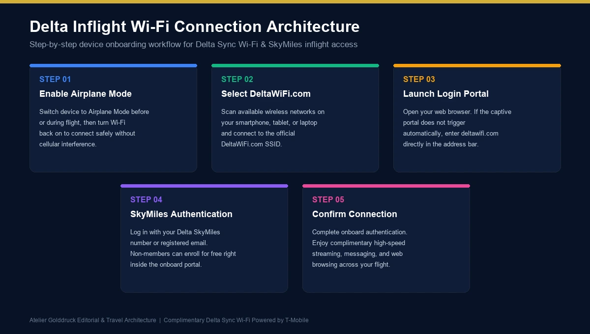
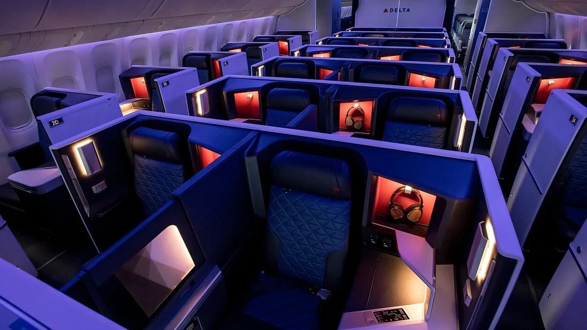

Deltawifi com Login is the process passengers use to access the onboard internet service offered by Delta Air Lines. Whether you want to check emails, send messages, browse websites, or catch up on work during a flight, knowing how to connect to Delta Wi-Fi can make your journey more convenient.
Delta Air Lines provides onboard internet through its Delta Sync Wi-Fi service on equipped aircraft. Eligible SkyMiles members can access fast, free Wi-Fi on most domestic US and international flights. However, some aircraft still use a different Wi-Fi system, and service availability can vary depending on your flight and destination.
The connection process is straightforward. Turn on airplane mode, enable Wi-Fi, select the DeltaWiFi.com network, and follow the instructions that appear on your device. If the login page does not open automatically, you can enter deltawifi.com directly in your browser's address bar.
This guide explains how the login process works, whether you need a SkyMiles account, how to troubleshoot connection problems, and what to know about free and paid internet access before your next flight.
What Is Deltawifi com Login?
Deltawifi com Login refers to accessing Delta Air Lines' onboard Wi-Fi portal through deltawifi.com. This portal allows passengers to connect to the internet service available on their aircraft.
Unlike the Wi-Fi network you use at home, the Delta Wi-Fi network operates as part of the aircraft's onboard connectivity system. Passengers must connect to the correct network and, depending on the service available, complete a sign-in process or select an appropriate access option.
Delta's newer connectivity experience is known as Delta Sync Wi-Fi, presented by T-Mobile. On eligible flights, SkyMiles members can sign in to access free internet. On aircraft using the older Wi-Fi Onboard system, the available options may include purchasing a Wi-Fi pass or using supported messaging services.
The portal may also provide access to selected member offers and digital experiences, depending on the aircraft, route, and applicable terms.
It is important to understand that deltawifi.com is intended for onboard connectivity. You generally need to be on a suitably equipped Delta flight to use the service, and ordinary internet access on the ground does not guarantee that the inflight portal will be available.
Deltawifi com Login: Step-by-Step Connection Guide
Connecting to Delta's inflight internet usually takes only a few steps. The exact screen may differ depending on your device and the Wi-Fi service installed on your aircraft.

Step 1: Enable Airplane Mode on Your Device
Before connecting, open the settings on your smartphone, tablet, or laptop.
Enable Airplane Mode as required during the flight. You can then switch Wi-Fi back on while leaving Airplane Mode enabled.
This allows your device to connect to the aircraft's Wi-Fi network without relying on its regular cellular connection.
Step 2: Select the DeltaWiFi.com Network
Open your device's Wi-Fi settings and look for the network named DeltaWiFi.com.
Select it to establish a connection with the onboard network.
If the network does not appear, check that your device's Wi-Fi is enabled and that the aircraft's internet service is available. Follow any instructions provided by the cabin crew.
Step 3: Open the Login Portal
In many cases, your browser will automatically display the Delta Wi-Fi sign-in page after you connect to the network.
If the page does not appear, open your preferred browser and type the following address into its address bar:
deltawifi.com
Make sure you enter the address into the browser's address bar rather than typing it into a search engine's search field.
Step 4: Sign In With Your SkyMiles Account
On an aircraft equipped with Delta Sync Wi-Fi, follow the portal's instructions to sign in with your existing Delta SkyMiles account.
You may be asked to provide your registered email address or SkyMiles number and the associated account credentials.
If you do not have a SkyMiles account, Delta allows eligible passengers to enroll for free through the available sign-in experience.
On aircraft using a different internet service, the portal may display separate connectivity or purchasing options. Follow the instructions presented for your flight rather than assuming that every aircraft has the same login process.
Step 5: Complete the Connection
After authentication, follow any remaining instructions shown on the screen.
When the portal confirms that you are connected, try opening a website or application to check your internet access.
If you experience a problem, avoid immediately entering your credentials repeatedly. First, check the Wi-Fi connection and confirm that the sign-in process has been completed successfully.
Can You Use Deltawifi com Login Without a SkyMiles Account?
The answer depends on the Wi-Fi service installed on your aircraft and the access option you select.
For Delta Sync Wi-Fi, a SkyMiles membership is required to access the complimentary internet service. The good news is that joining SkyMiles is free, and eligible passengers can enroll using the available onboard sign-in experience.
If you already have a membership, use the account associated with your Delta profile.
If you are new to Delta, you can visit www.delta.com to learn about the SkyMiles program or follow the enrollment instructions displayed in the inflight portal.
Passengers on aircraft using Wi-Fi Onboard may see a different set of options, including paid internet access and free messaging where supported.
The table below summarizes the main differences.
| Access Option | SkyMiles Account | Cost | Important Detail |
|---|---|---|---|
| Delta Sync Wi-Fi | Required for complimentary internet | Free on eligible flights | Available on most domestic US and international flights |
| Wi-Fi Flight Pass | Depends on the service and options displayed | Varies by flight and offer | Follow the onboard portal's purchasing instructions |
| Free messaging on supported Wi-Fi Onboard flights | May not be required | Free where offered | Available functionality can differ from full internet access |
| Delta SkyMiles membership | Required for the membership-based free Wi-Fi option | Free to join | Also provides access to the wider loyalty program |
Do not assume that all Delta flights offer the same service. Delta continues to expand its onboard connectivity, and some aircraft may have different features or availability.
Is Delta Wi-Fi Free for All Passengers?
Delta provides fast, free Wi-Fi for SkyMiles members on most domestic US flights and a growing number of international flights. However, complimentary full internet access is not guaranteed on every aircraft or route.
The availability of free internet depends on the aircraft's onboard connectivity equipment and the applicable service.
Before departure, you can check Delta's official website at:
www.delta.com/us/en/onboard/inflight-entertainment/onboard-wifi
Delta identifies flights equipped with complimentary Wi-Fi through its flight information and booking experience. You can also check the specific Wi-Fi service available on your aircraft.
If free internet is unavailable, the onboard portal may display paid access options or free messaging, depending on the system installed.
How Much Does Delta Wi-Fi Cost?
There is no single price that applies to every Delta flight.
On aircraft offering complimentary Delta Sync Wi-Fi, eligible SkyMiles members can access the included internet service without purchasing a separate pass.
On other flights, passengers may need to purchase a Wi-Fi Flight Pass or use the available messaging option. Pricing and availability are presented in the onboard portal and can vary according to the service offered.
Always check the displayed terms and price before completing a purchase. Avoid relying on outdated online articles that quote one universal price for every flight.
Deltawifi com Login on Different Devices
Delta's onboard Wi-Fi supports most modern devices that have wireless connectivity, including smartphones, tablets, and laptops running common operating systems.
The basic connection process is similar across devices, although the exact menu names and browser behavior can differ.
| Device | How to Connect | Common Issue |
|---|---|---|
| iPhone | Enable Airplane Mode, turn Wi-Fi on, and select DeltaWiFi.com | Portal does not open automatically |
| Android phone | Enable Airplane Mode, turn Wi-Fi on, and select the network | Incorrect network or connection settings |
| iPad | Connect through Wi-Fi settings, then open the browser if needed | Captive portal fails to display |
| Windows laptop | Select DeltaWiFi.com from available wireless networks | Browser, VPN, or authentication issue |
| MacBook | Connect using Wi-Fi settings and complete the browser sign-in | Existing network settings interfere |
| Chromebook | Select the onboard network and follow the portal instructions | Browser redirects or network authentication problems |

Can You Connect Multiple Devices?
Delta Sync Wi-Fi supports connecting an unlimited number of devices through the complimentary service, with each device signed in using your SkyMiles information.
For example, you may connect your smartphone and laptop separately during the same flight.
Open Wi-Fi settings on each device, select DeltaWiFi.com, and complete the applicable sign-in steps again.
The experience can differ on aircraft that use other Wi-Fi systems, so follow the instructions displayed by the onboard portal.
Deltawifi com Login Not Working? Try These Fixes
Sometimes the onboard network appears in your settings, but the login page does not open. In other cases, the portal loads but does not accept your credentials or complete the connection.
The following troubleshooting steps can help identify the cause.
1. The Login Page Is Not Opening
If your device connects to the network but the portal does not appear, open your browser manually.
Enter deltawifi.com in the address bar and wait for the sign-in page to load.
If nothing happens, disconnect from the network and reconnect. You can also try opening a new browser tab.
2. Forget the Network and Reconnect
A temporary connection problem may prevent your device from reaching the login portal.
Open your Wi-Fi settings, select the DeltaWiFi.com network, and choose the option to forget or remove it.
Then reconnect to the same network and try opening the portal again.
This simple reset can resolve some issues caused by saved wireless settings.
3. Check Your SkyMiles Credentials
If the portal opens but rejects your login information, check that you are using the correct SkyMiles account and password.
Look for typing errors and confirm that the email address or membership number belongs to the account you intend to use.
If you have forgotten your password, use Delta's official account-recovery process through its website rather than looking for a separate password-reset service for deltawifi.com.
4. Connect Before Enabling Your VPN
Virtual private networks can sometimes interfere with captive portals, which are the login pages used by public or restricted Wi-Fi networks.
Delta's official guidance recommends connecting to onboard Wi-Fi before logging in to your VPN.
If the portal is not working, temporarily disconnect from your VPN, complete the onboard sign-in process, and then reconnect to your VPN if needed.
Delta supports VPN use once you are connected, although some applications or company security settings may require additional troubleshooting.
5. Check Your Device's Network Settings
If the problem continues, make sure Wi-Fi is enabled while Airplane Mode remains on.
Temporarily disconnect from other wireless networks if your device is switching connections automatically.
If you are using an iPhone or iPad and can access the network but certain member offers or content do not display, check whether iCloud Private Relay is interfering with those specific features. Delta notes that Private Relay can affect the delivery of some exclusive offers and content.
6. Confirm That Wi-Fi Is Available on Your Flight
Not every aircraft or route provides the same internet service.
Delta is expanding free Wi-Fi across its fleet, but some regional aircraft and other planes may use a different system or have different coverage limitations.
If the portal is unavailable, ask a flight attendant whether the aircraft offers Wi-Fi and which access options are supported.
7. Contact Delta Support if Necessary
If the service remains unavailable after these steps, use Delta's official customer support channels.
If you purchased a Wi-Fi pass and cannot access the service, keep your purchase confirmation and receipt. Delta provides separate support instructions depending on which provider or service processed the transaction.
Avoid paying another person to fix a login problem or sharing your SkyMiles credentials with an unofficial support service.
What Can You Do After Connecting to Delta Wi-Fi?
Once your device is successfully connected, the available activities depend on the onboard service, internet performance, and any relevant restrictions.
On flights with a suitable Delta Sync Wi-Fi connection, passengers may be able to browse websites, send messages, check email, work with cloud-based documents, and access supported streaming services.
The actual experience can vary with network availability, passenger demand, the apps being used, and the aircraft's connectivity equipment.
Here are several common uses:
- Email and work: Check messages, review documents, and handle suitable online tasks.
- Messaging apps: Communicate through supported services such as iMessage, WhatsApp, and Facebook Messenger.
- Web browsing: Read articles, check information, and browse compatible websites.
- Digital entertainment: Access supported streaming and other onboard digital experiences where available.
- Travel information: Visit Delta's website to check flight information or manage eligible travel arrangements.
Keep in mind that access to Wi-Fi does not mean every application will work exactly as it does on the ground. Live voice and video calls are not permitted during Delta flights.
If your work depends on large downloads or uninterrupted high-bandwidth applications, prepare offline copies of important documents before departure.
Is Delta Inflight Wi-Fi Secure?
Delta's onboard connectivity is designed for passenger use, but it is still sensible to follow basic cybersecurity precautions.
As with other shared wireless networks, you should avoid unnecessary exposure of sensitive information.
For safer usage:
- Use HTTPS websites whenever possible.
- Keep your device's operating system and browser updated.
- Avoid downloading unfamiliar files or applications.
- Use a trusted VPN when appropriate for your work or privacy needs.
- Never share your SkyMiles password or verification codes with another passenger or an unofficial support provider.
- Sign out of sensitive accounts when you have finished using them.
Delta advises passengers to be cautious when accessing or sending private files through onboard Wi-Fi and to avoid unknown links or suspicious pages.
A secure connection is useful, but good device security and sensible browsing habits remain important.
Frequently Asked Questions About Deltawifi com Login
1. How do I access Deltawifi com Login?
Turn on Airplane Mode, enable Wi-Fi, and select DeltaWiFi.com from the available wireless networks. Open your browser and enter deltawifi.com if the portal does not appear automatically. Follow the instructions displayed for your flight.
2. Is deltawifi.com the official Delta Wi-Fi login address?
Delta Air Lines directs passengers to deltawifi.com to access its onboard Wi-Fi sign-in experience. Make sure you enter the correct address and avoid unfamiliar websites that imitate the airline's portal.
3. Do I need a SkyMiles account to use Delta Wi-Fi?
A SkyMiles membership is required for the complimentary Delta Sync Wi-Fi option. Membership is free to join. Other onboard Wi-Fi services may display different access and payment options.
4. Is Delta Wi-Fi free on every flight?
No. Free Wi-Fi is available to SkyMiles members on most domestic US flights and many international flights, but availability varies by aircraft and route. Check Delta's current onboard Wi-Fi information for your specific flight.
5. Why is my Deltawifi com Login page not loading?
The portal may fail to load because of a temporary network issue, browser problem, VPN interference, or an unavailable onboard service. Try opening deltawifi.com manually, reconnecting to the network, or temporarily disconnecting from your VPN while completing sign-in.
6. Can I use Delta Wi-Fi on my laptop?
Yes. Delta supports most Wi-Fi-enabled laptops, including many Windows, macOS, and Chromebook devices. Select DeltaWiFi.com from the wireless network list and complete the sign-in process.
7. Can I connect my phone and laptop at the same time?
Delta Sync Wi-Fi supports an unlimited number of devices, with each device signing in using your SkyMiles information. Other onboard Wi-Fi systems may have different conditions.
8. Do I need to download an app to use Delta Wi-Fi?
You generally do not need a separate application to access the onboard login portal. Connect to the DeltaWiFi.com network and follow the browser-based instructions. The Fly Delta app may provide additional functionality, but it is not a replacement for following the onboard connectivity instructions.
9. Can I use a VPN with Delta Wi-Fi?
Yes. Delta's guidance recommends connecting to the Wi-Fi network and completing the portal login before turning on your VPN. Some VPN configurations may still require additional troubleshooting.
10. What should I do if Delta Wi-Fi disconnects during a flight?
Check whether the wireless network is still connected and whether the onboard service is available. Reconnect to DeltaWiFi.com and complete any required authentication. If the problem persists, ask the cabin crew for assistance.
Conclusion: Complete Your Deltawifi com Login Successfully
Deltawifi com Login is the standard starting point for passengers who want to access Delta Air Lines' onboard internet service. By enabling Airplane Mode, turning Wi-Fi back on, selecting DeltaWiFi.com, and following the sign-in instructions, you can usually connect in just a few steps.
For eligible passengers, a free SkyMiles membership provides access to complimentary Delta Sync Wi-Fi on most domestic US and international flights. However, aircraft equipment, route coverage, and the transition between onboard Wi-Fi systems can affect availability and access options.
If the login page does not open, try entering deltawifi.com manually, reconnecting to the network, checking your SkyMiles credentials, and completing the sign-in process before enabling your VPN.
Ultimately, understanding how Deltawifi com Login works can help you avoid common connection problems and make better use of Delta's onboard internet. For the most accurate information about your flight, check Delta's official onboard Wi-Fi guidance before departure.
For more such useful information read our site ateliergolddruck.com